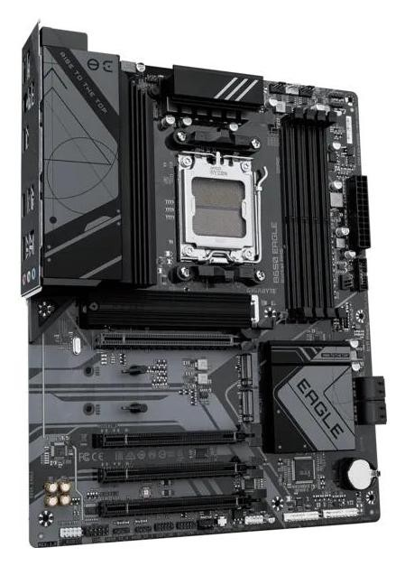

Płyta główna – centrum dowodzenia komputera
Płyta główna (ang. motherboard) to najważniejszy element komputera pod względem łączenia wszystkich komponentów w jeden sprawnie działający system. To na niej montuje się procesor, pamięć RAM, kartę graficzną, dyski, zasilanie i inne podzespoły. Płyta główna zapewnia im komunikację dzięki specjalnym złączom, gniazdom i ścieżkom elektrycznym. Istnieją różne formaty płyt, takie jak ATX, microATX czy mini-ITX, które wpływają na wielkość obudowy i możliwości rozbudowy. Płyty główne różnią się też podstawką procesora (socketem) – np. Intel LGA1700 czy AMD AM5 – co oznacza, że są kompatybilne tylko z konkretnymi modelami CPU. Dodatkowo, nowoczesne płyty oferują wiele funkcji jak Wi-Fi, Bluetooth, szybkie porty USB, sloty M.2 dla dysków SSD czy rozbudowane systemy chłodzenia. Bez niej komputer nie mógłby działać – to ona trzyma wszystko razem i pozwala na współpracę wszystkich części.
